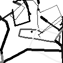
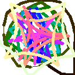

Co-evolving Line Drawings with Hierarchical Evolution
2016. Under Alan Blair at UNSW
PDF


Parallel Hierarchical Evolution of String Library Functions
2016. Under Alan Blair at UNSW
PDF
Vehicle pose estimation using stereo information
2015. Under Xuming He at CSIRO
PDF